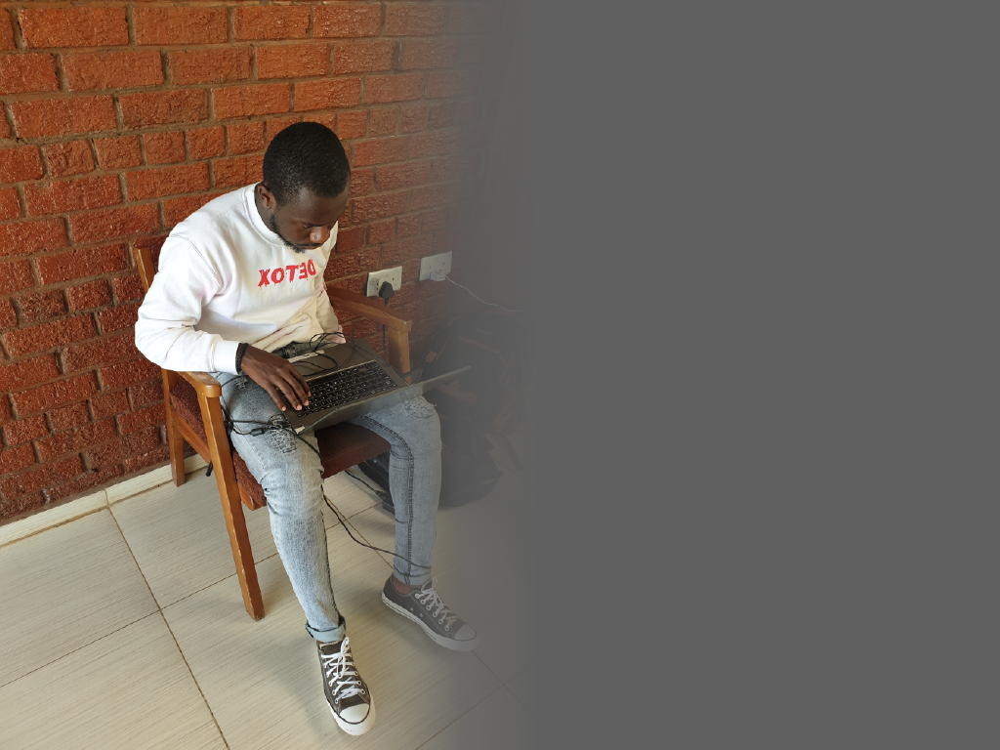

WHY I DO WHAT I DO

Welcome to my About page! I am so glad you made it here. I hope you find everything you need and feel free to contact me with any other questions or concerns you may have. Thank you for learning more about me and my projects!
Hi,
My name is Takue, and I am a Graphic Designer and Web Designer. I have a broad base of skills and experience in creating visually appealing websites and logos, as well as other marketing materials, from concepts to final production. I am extremely proficient with Adobe Creative Cloud and understand contemporary web design principles and techniques. My passion for design started out with my degree in Graphic Design and since then I have gained experience working on freelance design projects for a wide range of clients. This has provided me with the opportunity to build a portfolio that showcases my passion for design, as well as my ability to produce professional and thoughtful design solutions. My style of design focuses on combining visual creativity with usability, as I strive to create valueable and memorable experiences in order to get people to take notice. I believe a successful design should not only look good but should also be easy to use and understand.

If you choose to work with me, I will be dedicated and passionate about the project, making sure that the end result meets your needs and expectations. I always strive to create the best design solutions, so please don’t hesitate to get in touch if you would like to know more about how I can help you.
Best Regards,
Takudzwa Mutamburigwa
Best Regards,
Takudzwa Mutamburigwa